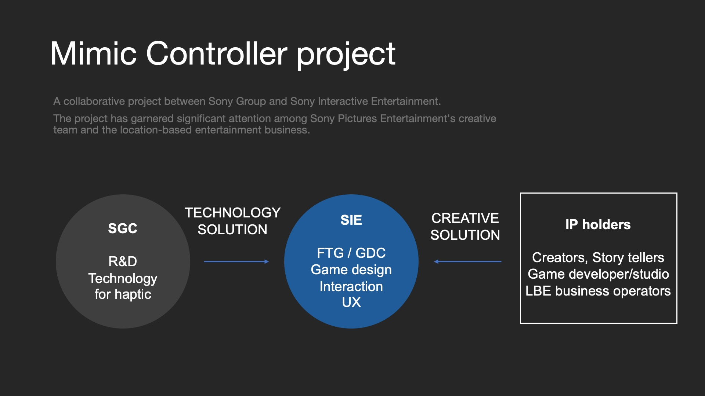
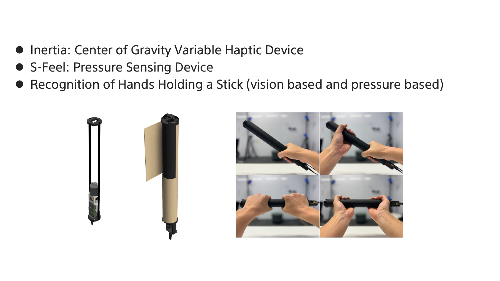
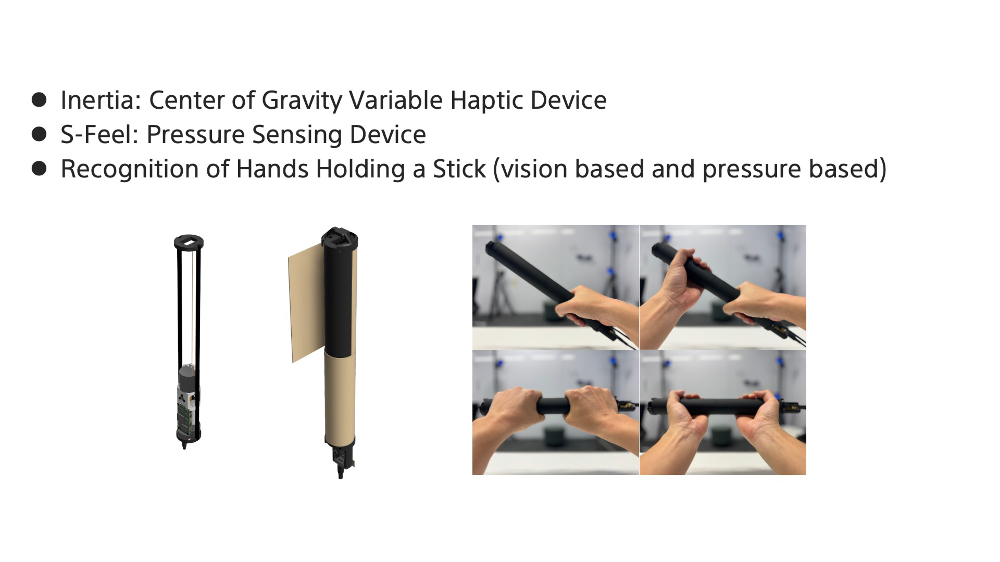

Project Overview
Planned and developed an interaction R&D and haptic exploration project for the next-generation PlayStation controller. Managed the entire process through prototyping.

Responsibilities
Planning and UX design of the haptic controller.
Achievements
Adopted for a new location-based entertainment experience demo at CES 2025. Over 100,000 visitors experienced it, and it garnered 160 media mentions.
mimic controller article
 

Staff: Planning Director: Ramanath Bat, Project Manager: Masanori Matsushima, Engineers: Liu, Yuhu / Katsuhiko Matsuura
Tools: Unity / Unreal Engine / Arduino